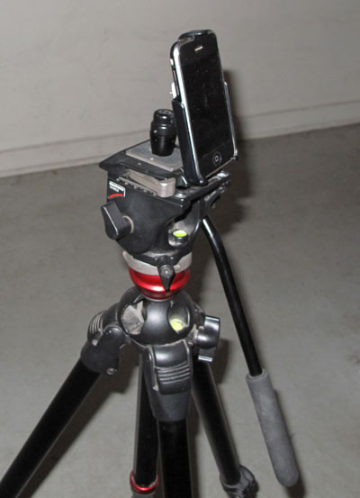

Professional Features
By Laan Labs
iTimeLapse comes packed with professional features designed to help you create stunning time-lapse videos with ease.
Interval Control
 Set custom intervals from 1 second to several minutes between shots. Perfect timing
control ensures you capture exactly what you want, whether it's fast-moving clouds
or slowly blooming flowers.
Set custom intervals from 1 second to several minutes between shots. Perfect timing
control ensures you capture exactly what you want, whether it's fast-moving clouds
or slowly blooming flowers.
High-Resolution Output
Create videos at full device resolution for crystal-clear results. Your time-lapse videos will look amazing on any screen, from iPhone displays to large HDTVs.
Video Stabilization
Built-in stabilization technology helps smooth out any minor camera movements, ensuring your final video is steady and professional-looking.
Easy Sharing
Export your finished time-lapse videos directly to your camera roll, or share them instantly with friends and family through your favorite social media platforms.
Tripod Accessories
 For best results, we recommend using a tripod or mount with your device. This ensures stability throughout your time-lapse shoot and produces the most professional results.
Check out our recommended accessories on our support page, including specialized mounts and holders designed specifically for time-lapse photography.
 Features, Photography
Features, Photography
 November 27, 2025
November 27, 2025